Loading.......
ConveyThis
뭐먹지 테스트
너만을 위한, 맞춤형 메뉴
bgm OFF
시작하기
클릭시 넘어갑니다!
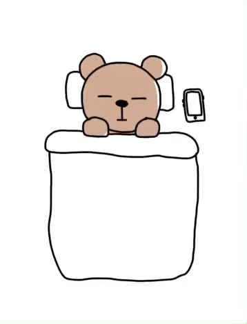
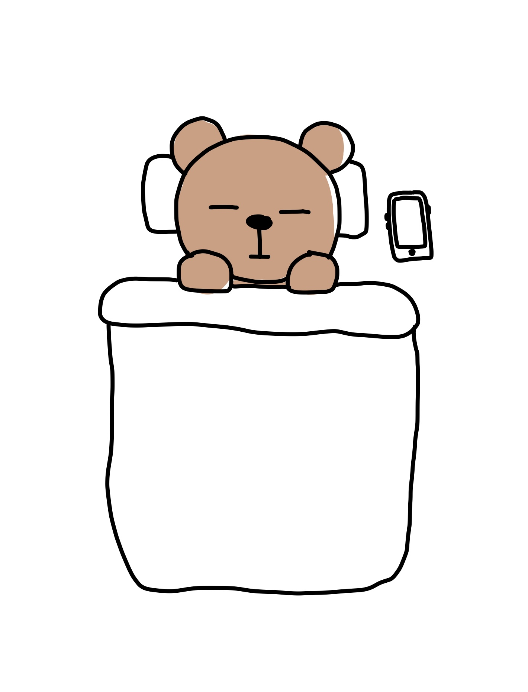
당신, 곤하게 잠들어 있군요
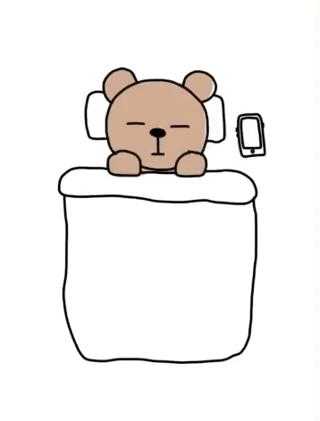
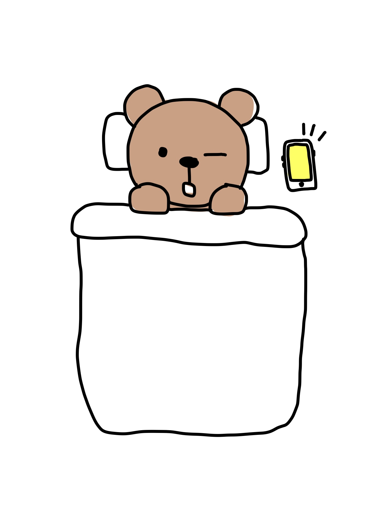
앗 아침 알람소리에 깨버렸네요
당신이 할 행동을 클릭하세요!
tip! 계속 잠만자면 밥은 언제...?
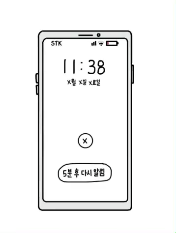
더 잘래
일어나자
알람을 끄고 다시 잘까, 아니면 이제 그만 일어날까?
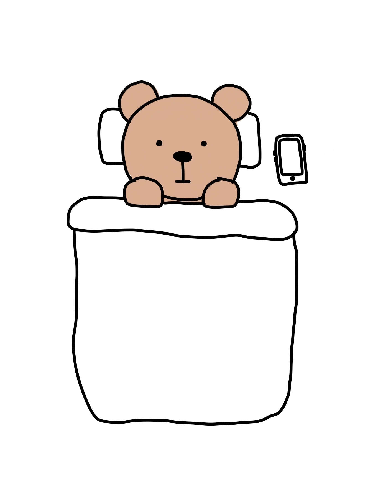
좀 더 자야겠다. . .
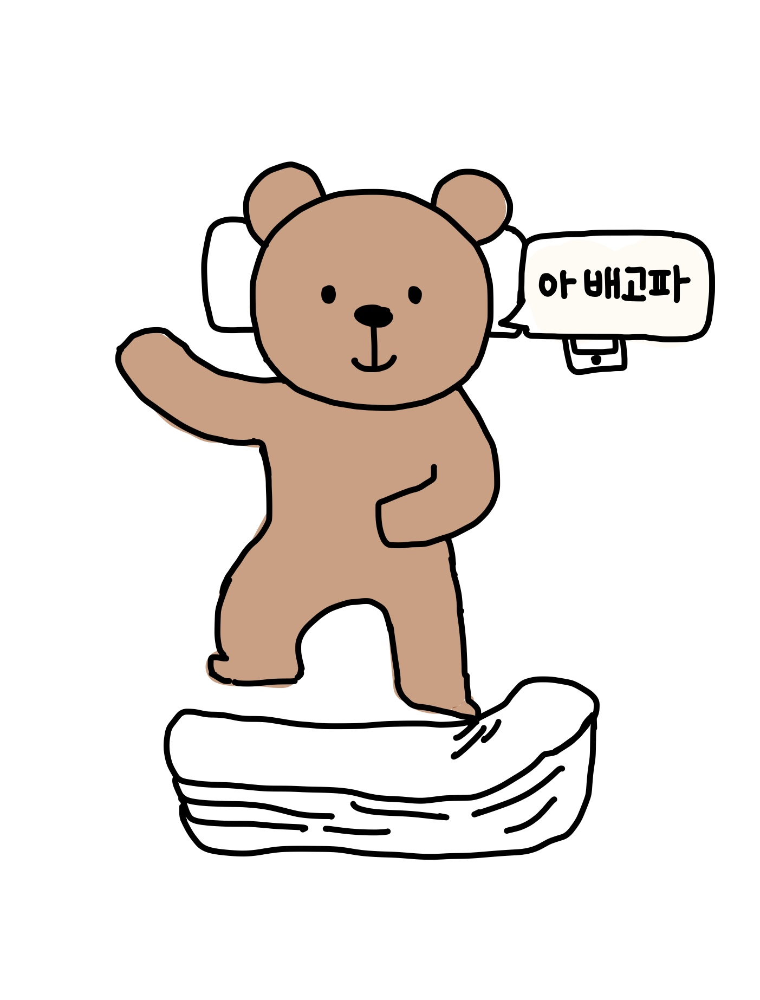
아 배고파
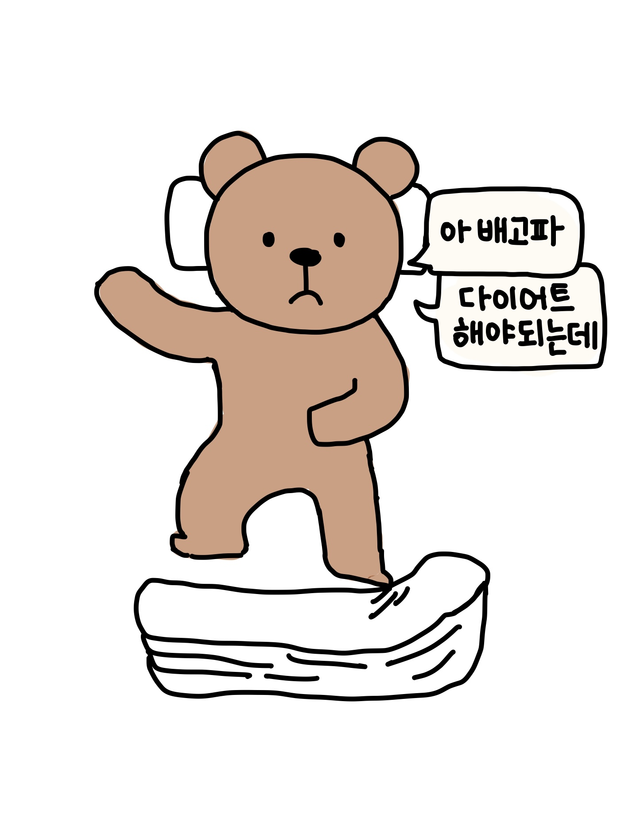
다이어트 해야 되는데
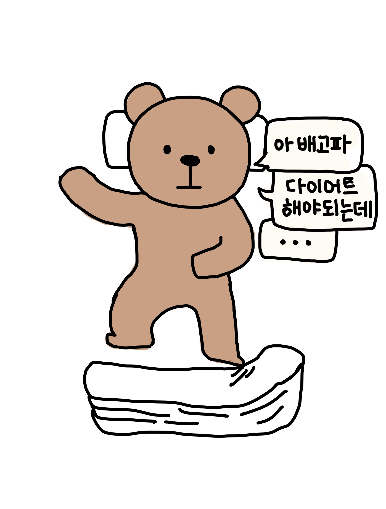
. . .
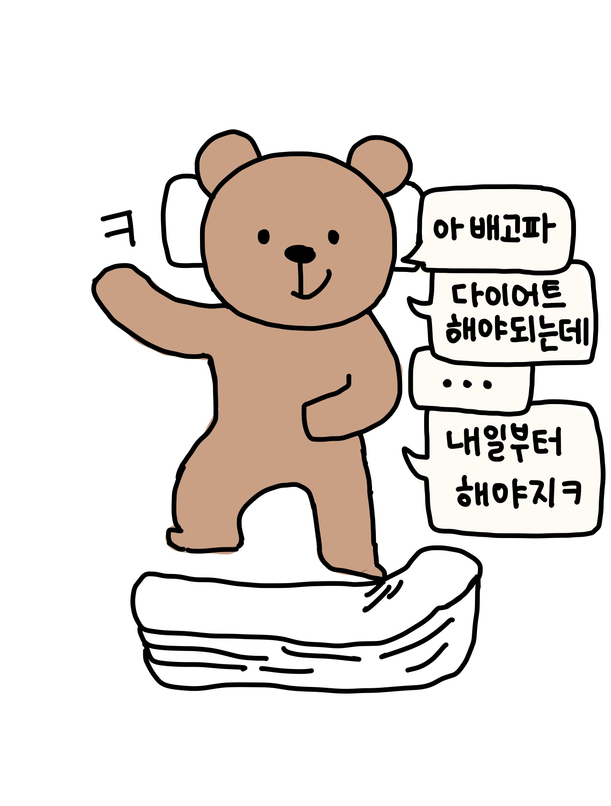
내일부터 해야지
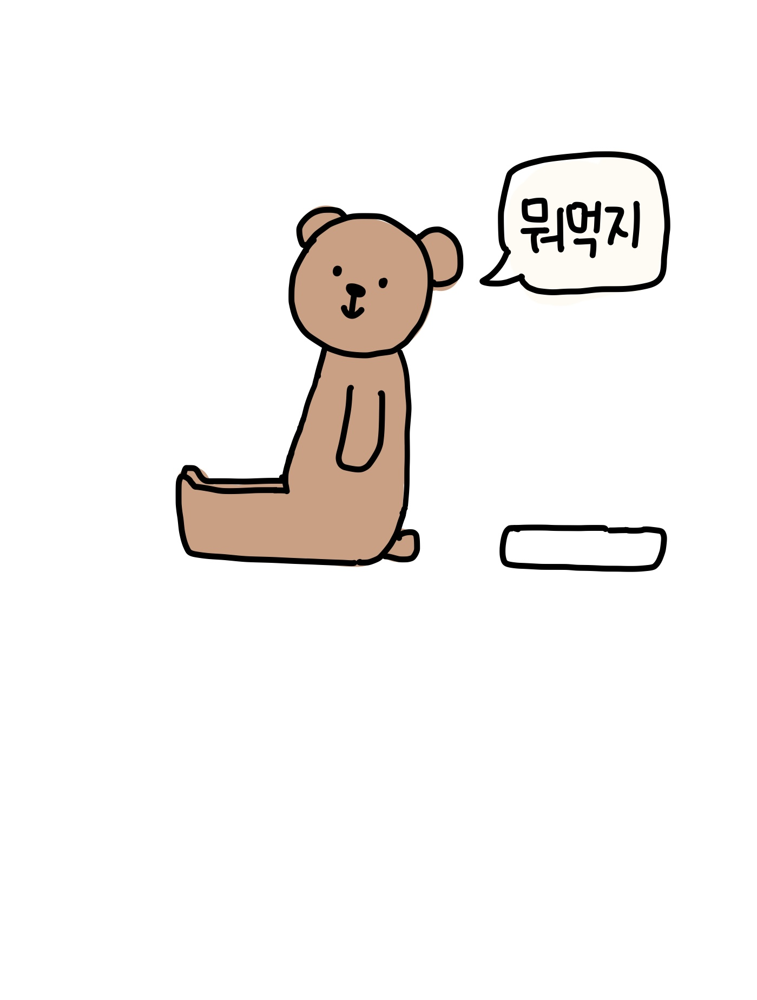
뭐먹지
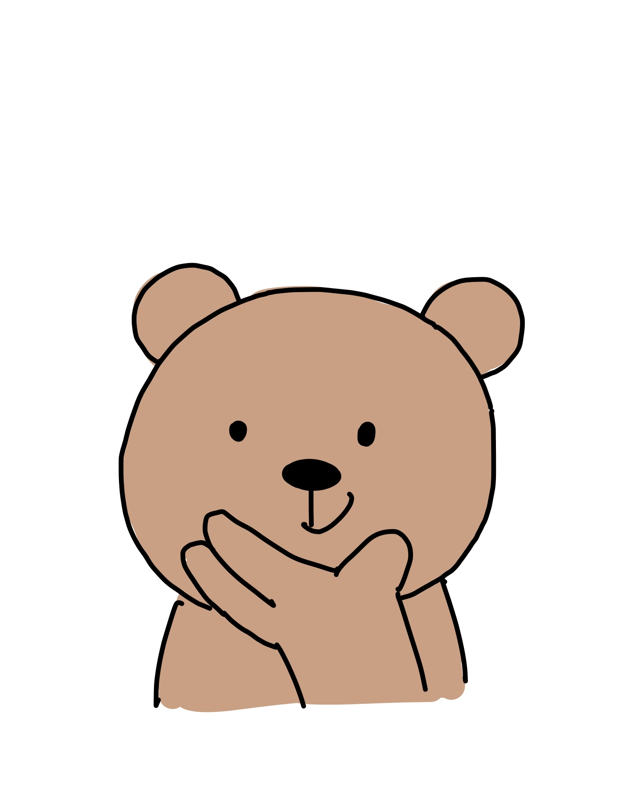
일어나자 마자 뭘 먹을지 고민 중이군요
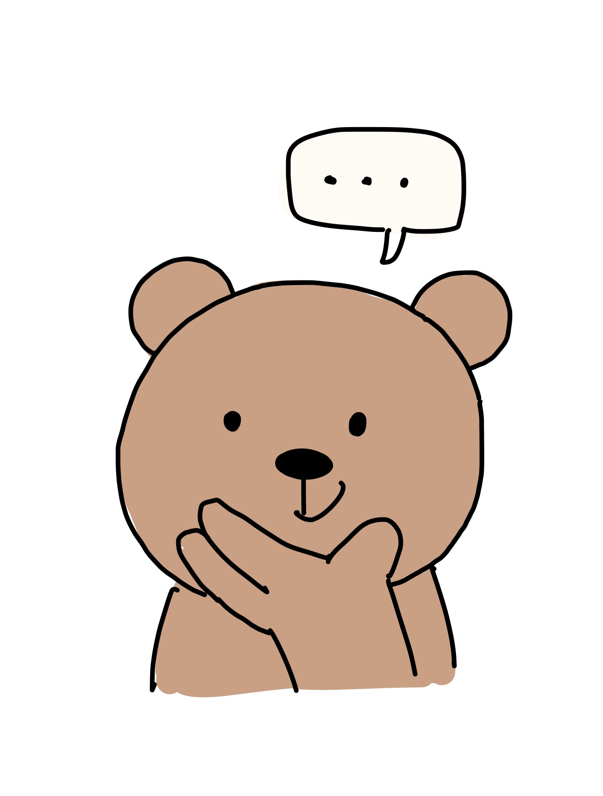
. . .
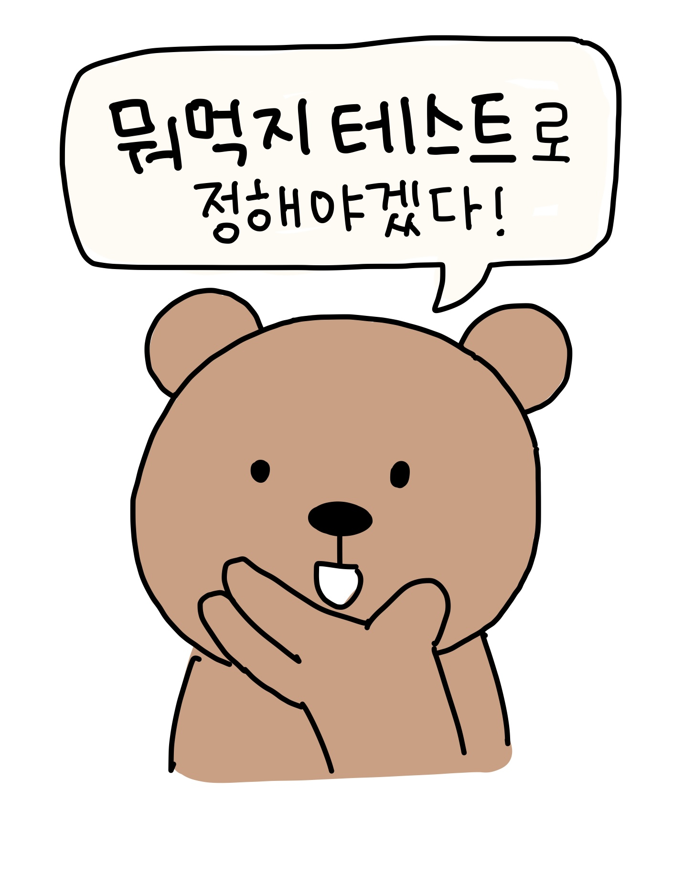
뭐먹지 테스트로 정해야겠다!
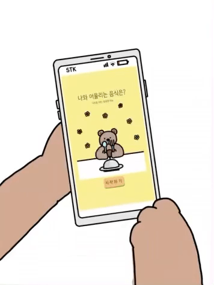
문제
이문제는 어쩌구
Primary
Primary
동물이름
설명
공유하기를 누르면 결과창이 공유되지 않고 메인페이지가 떠요!
결과 공유는 스크린샷을 이용해 주시면 감사하겠습니다!
카카오톡으로 공유하기
한번 더 해보기!